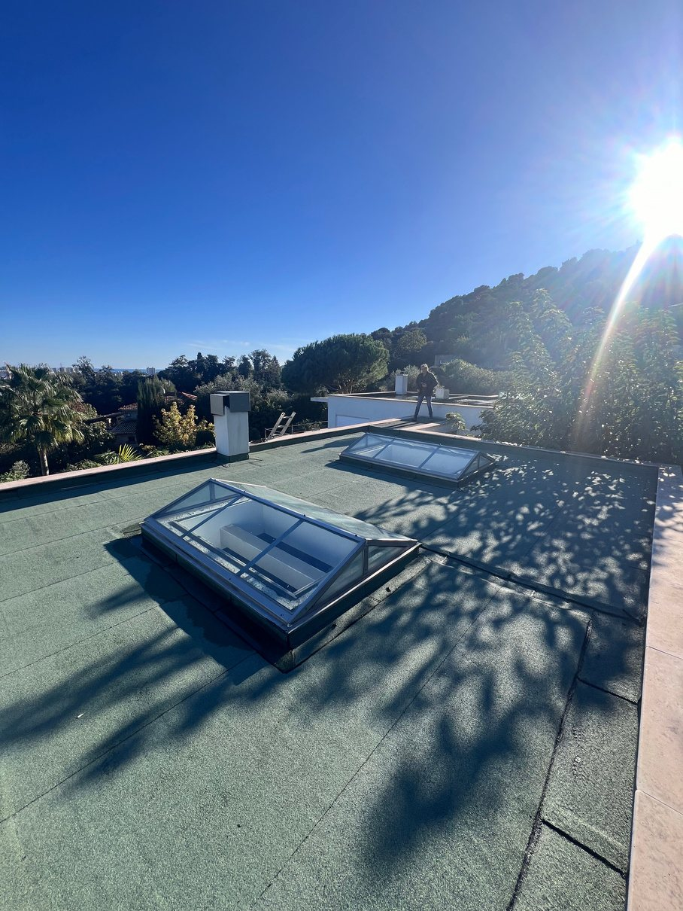
01
Terrasses auto-protégées
La solution étanche et esthétique, sans revêtement supplémentaire : une protection intégrée (ardoises, granulats, feuille métallique) pour toitures accessibles à l'entretien.
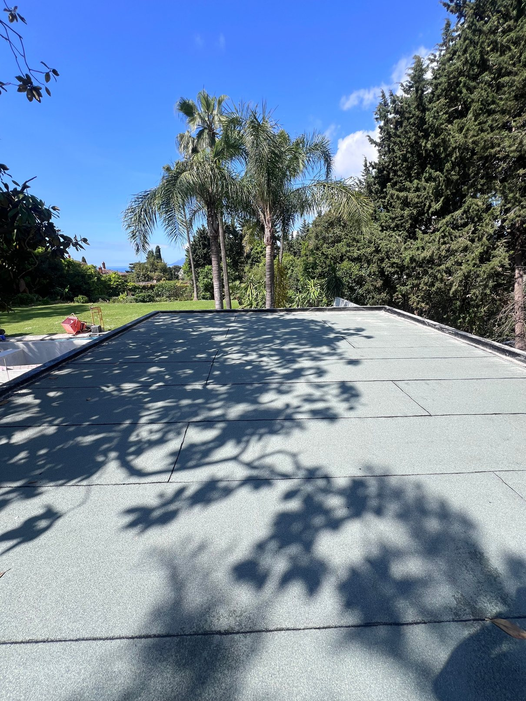
Toitures, terrasses, piscines, résine, ouvrages enterrés et recherche de fuite : un savoir-faire familial transmis depuis quatre générations au service de la protection durable de vos ouvrages.
De la toiture-terrasse aux ouvrages enterrés, nous intervenons sur l'ensemble des systèmes d'étanchéité et d'imperméabilisation, pour les particuliers comme pour les professionnels.

La solution étanche et esthétique, sans revêtement supplémentaire : une protection intégrée (ardoises, granulats, feuille métallique) pour toitures accessibles à l'entretien.
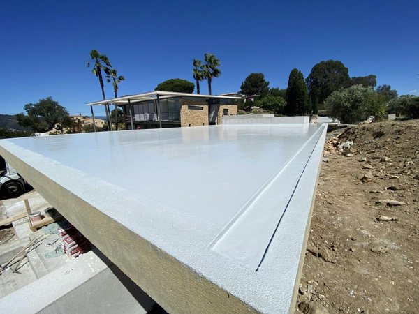
Une imperméabilité sans joint ni raccord, adaptée aux formes complexes et aux détails techniques, pour vos toitures-terrasses neuves ou en rénovation.
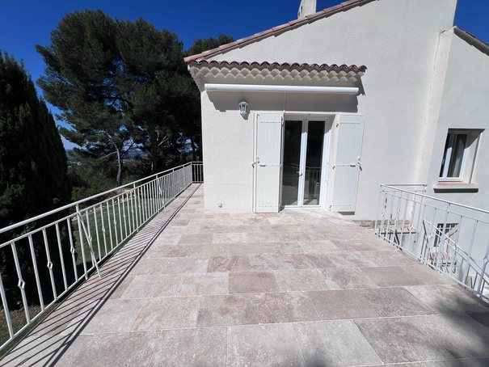
Gravier, carrelage scellé / pierre, dalles sur plots ou platelage bois : une protection optimale de la toiture-terrasse, robuste et durable, avec de nombreuses finitions.
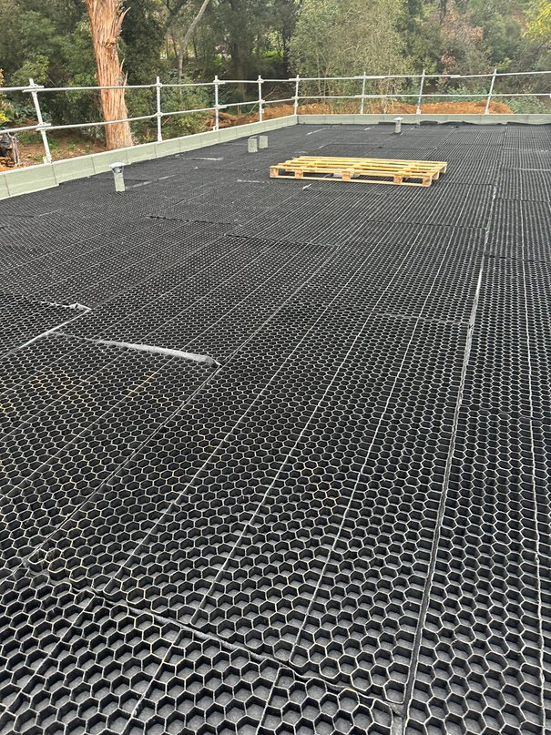
Une gestion technique des eaux pluviales : rétention temporaire en toiture avant écoulement régulé, pour soulager les réseaux d'assainissement.
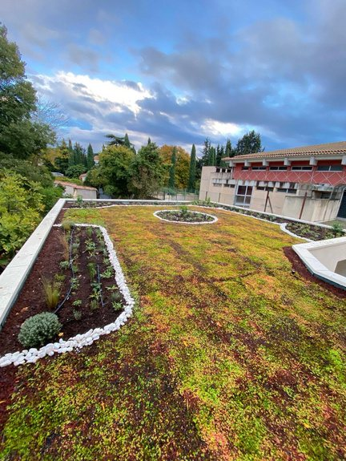
Complexes végétalisés extensifs ou intensifs (caissette, rouleau, massif / jardin), alliant étanchéité, isolation et intégration paysagère.
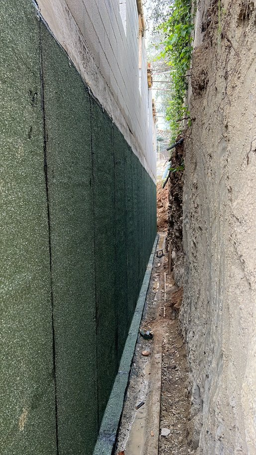
Une protection durable contre les infiltrations d'eau et l'humidité, conçue pour résister à la pression des terres et préserver vos fondations.
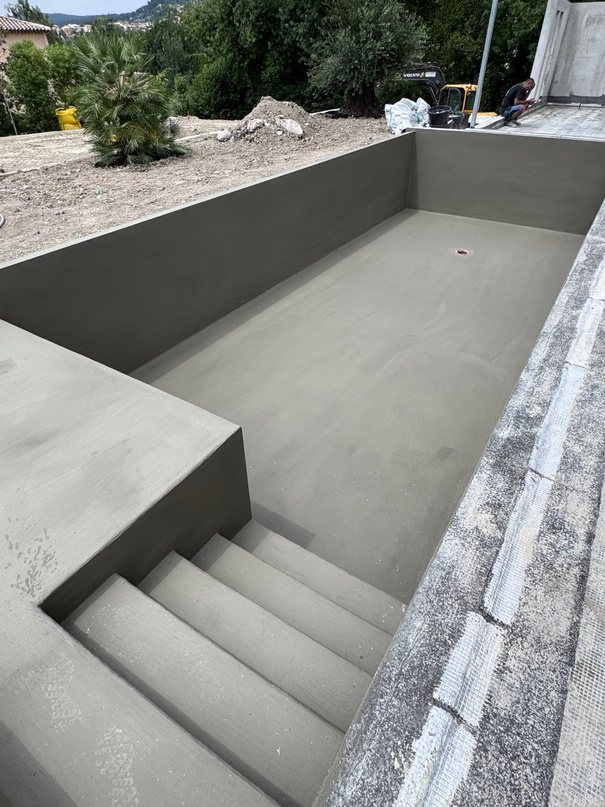
Des procédés haute performance pour la pérennité de vos ouvrages, bassins et piscines en béton, privés ou publics, contre les fuites et infiltrations.
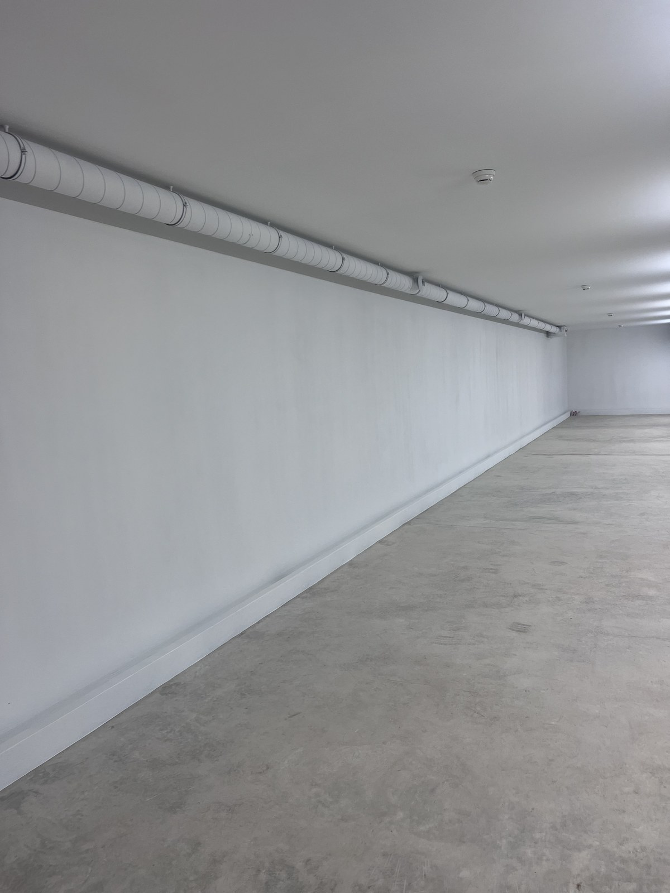
Une étanchéité totale des parois et planchers contre les remontées d'eau sous pression, pour des sous-sols sains même en conditions hydrostatiques exigeantes.
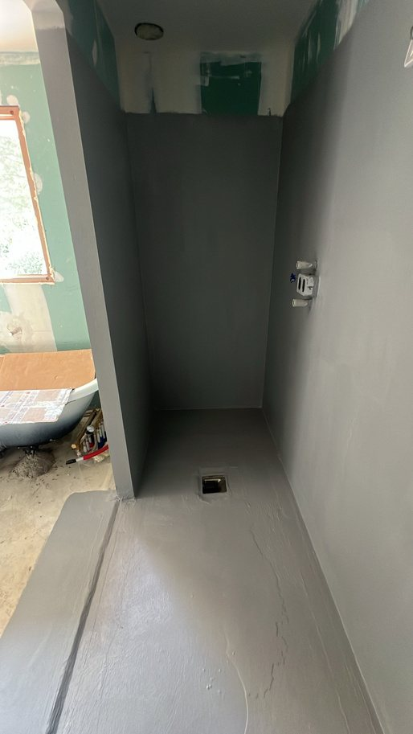
Une protection durable contre les infiltrations d'eau, avec une finition esthétique et facile d'entretien, pour douches à l'italienne et espaces sanitaires.
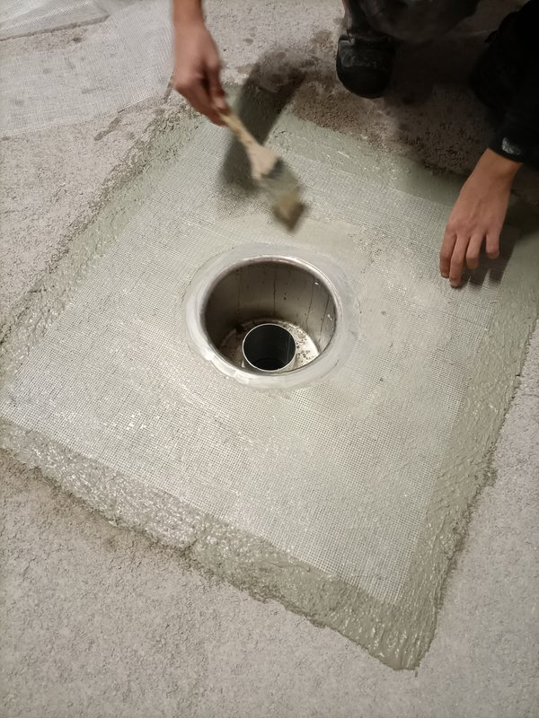
Une protection contre les infiltrations d'eau et l'humidité entre niveaux, pour préserver le confort et la solidité de vos structures intérieures.
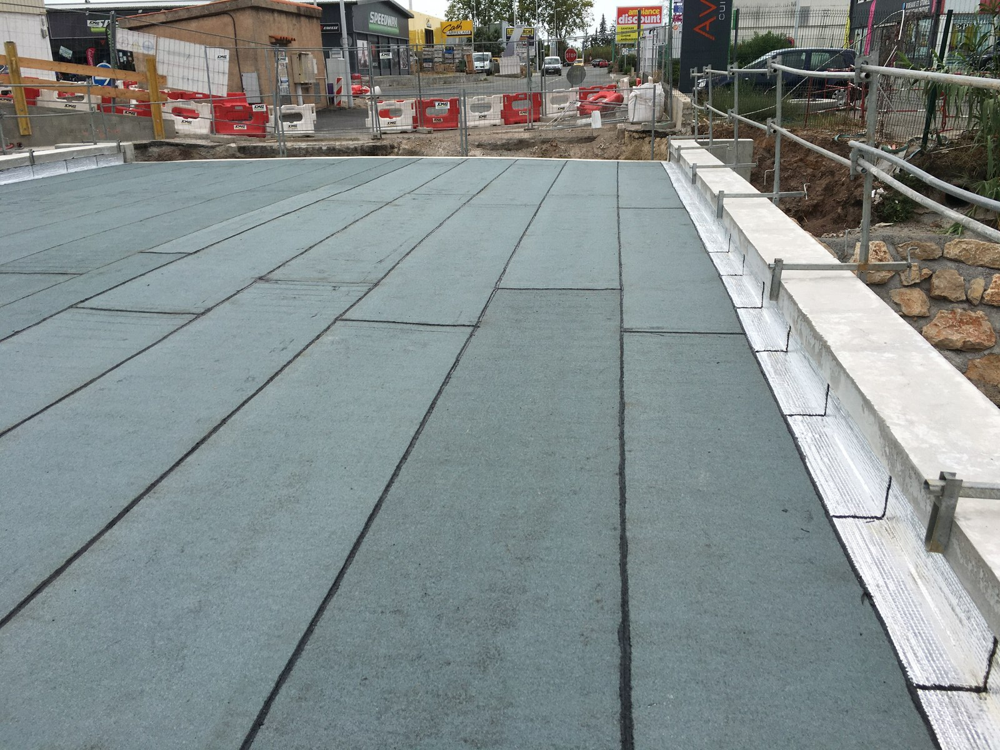
Des systèmes conçus pour les ouvrages les plus exigeants : ponts, parkings, réservoirs, bassins — résistance mécanique et chimique durable.
Chaque chantier suit un processus rigoureux, pensé pour garantir la fiabilité technique et la tranquillité du client.
Analyse de l'ouvrage, des contraintes techniques et des attentes du client pour définir la solution la mieux adaptée.
Proposition technique détaillée et devis clair, précisant les matériaux, systèmes et délais envisagés.
Mise en œuvre par notre équipe selon les règles de l'art, avec un suivi rigoureux de chaque étape du chantier.
Vérification finale de l'étanchéité et de la conformité de l'ouvrage avant remise au client.
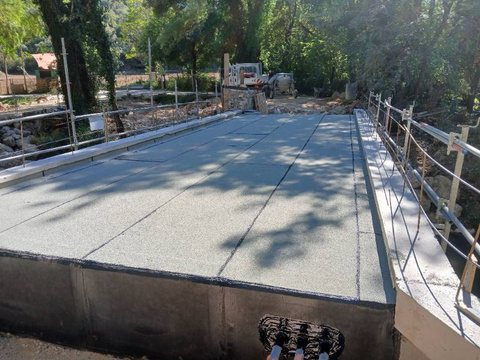
Nous accompagnons également les professionnels de l'immobilier et de la construction sur leurs opérations de maintenance, de rénovation ou de construction neuve.
Le métier de l'étanchéité se transmet chez nous de génération en génération. Cette expérience familiale nourrit aujourd'hui l'exigence technique de Sud Alpes Étanchéité, au service de la protection durable de vos ouvrages, du Pays d'Aix aux Hautes-Alpes.
Les fondations du métier de l'étanchéité
La transmission du savoir-faire technique
Le développement de l'expertise sur nos secteurs
Sud Alpes Étanchéité, au service de vos ouvrages aujourd'hui
Une sélection de réalisations récentes, illustrant la diversité de nos interventions en étanchéité et imperméabilisation.
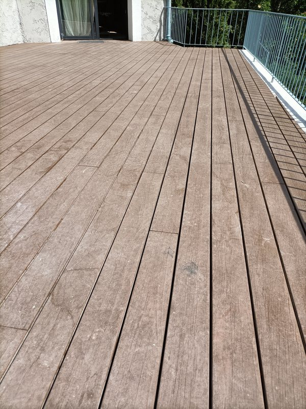
Platelage bois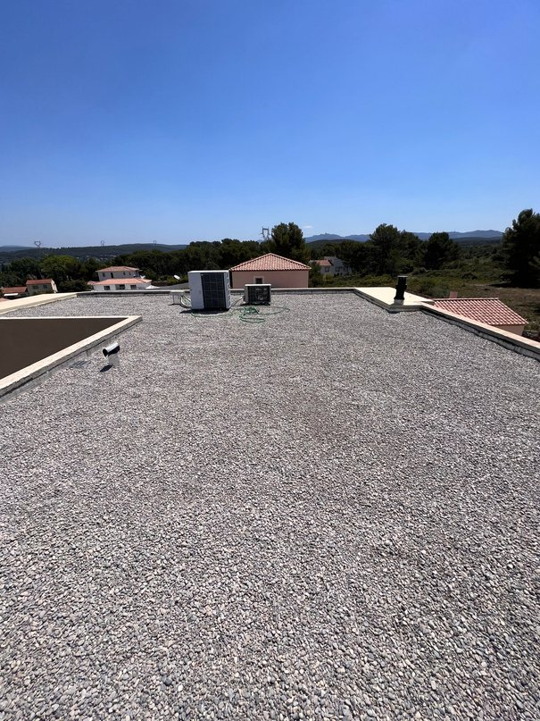
Terrasse gravier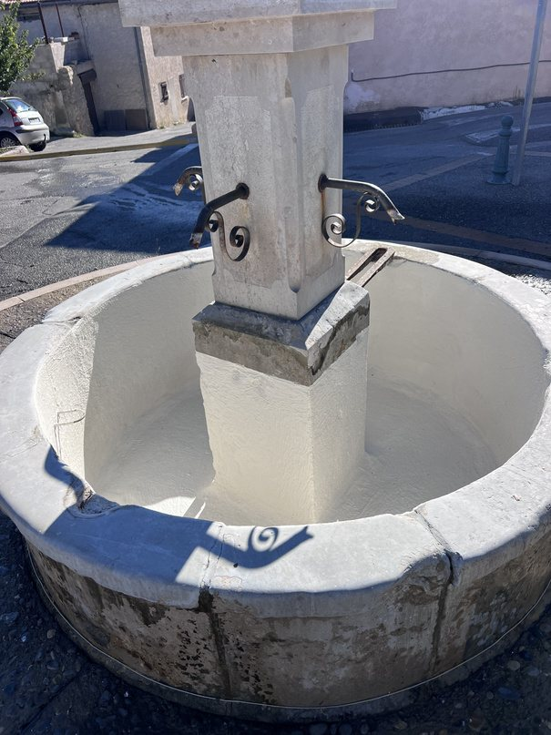
Imperméabilisation bassinNous travaillons avec des fabricants reconnus pour la qualité et la fiabilité de nos systèmes d'étanchéité.
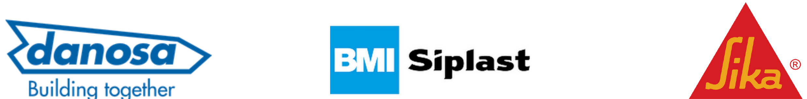
Nos experts vous accompagnent de l'étude à la réalisation de votre projet. Décrivez-nous votre chantier, nous revenons vers vous rapidement.